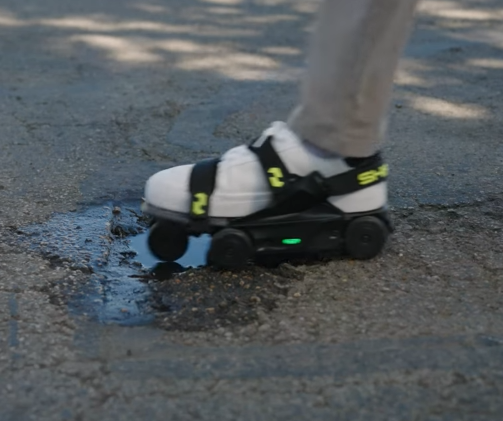

Moonwalkers: walking, but make it faster.

Some people buy gadgets to improve their lives. Shift Robotics looked at walking — a system that’s worked reasonably well for a while — and decided it was moving too slowly. The result is Moonwalkers: powered shoes with wheels on the bottom that move as you step, so you’re still walking normally, just faster than nature intended. You’re not skating, gliding, or floating — you’re just aggressively walking with help. It’s less “learning a new skill” and more “your legs now have a mild engine attached.” If you want the official product page, it’s here: shiftrobotics.io/products/moonwalkers-aero .
The funny part: there’s no hand controller. No joystick. No “press X to sprint.” To speed up, you walk faster. To slow down, you walk slower. It sounds obvious until you realize how rare it is for a gadget to work exactly the way your brain expects it to. The software (yes, there’s software) learns your walking habits and adapts to you. Here’s the launch/demo video: youtube.com/watch?v=8r0TPD5NUQ0 . Practical uses include finally keeping up with your dog’s preferred walking speed, turning basic errands into a productivity flex, and finally passing that one slow walker without committing a social crime.
This is also the moment you learn how much faster walking costs. the Moonwalkers Aero are 4-wheel drive and cost $999. The upgraded Moonwalkers are 8-wheel drive and cost $1399 — and if you’re actually going to buy these, you should probably go for the 8-wheel version because uneven sidewalks, potholes, and “surprise trail” moments are absolutely a thing in the real world. The Aero is the “slick city commuter” option. The 8-wheel is the “I refuse to be slowed by terrain” option. Either way, you’re paying four figures to become a person who can casually stroll at an unreasonable pace — which is either peak innovation or the beginning of a very specific kind of villain arc.